Das ist die Internetseite der Amateurfunkstelle DF9QM.
Hier finden sie Audiodateien von den beiden Amateurfunkrelaisstellen
DB0UO und DB0OO in Oldenburg.
Die Seite ist verlinkt mit der Geschichte der Oldenburger Relaisstellen.
Verfaßt von DF9QM (von 1973 bis 1976 DB1BZ)
(Bitte Geduld, mit Modem besser nicht laden… )
Am besten im Format 1024 * 768 ansehen!
Grafik und Umbau von Karim Kiel
Mitten in der Geschichte von DB0UO sind hier und da PDF Dateien zwischen den Zeilen versteckt, die man leicht übersehen kann.
Hier sind einmal alle aufgelistet:
Db0Yo | Fm-Story | Fmr | W1Gan-Duplexer
Hier finden sie Audiodateien von den beiden Amateurfunkrelaisstellen
DB0UO und DB0OO in Oldenburg.
Die Seite ist verlinkt mit der Geschichte der Oldenburger Relaisstellen.
DB1BZ/mobil auf DB0UO und DB0ZO zugleich: 19.10.74
Erste Tests mit DK2IH und DL2PI auf 70cm. – 03.81
Aufbau des 70cm Relais auf der LVA am 21.08.1981
Reichweitentest mit DB6BD/m nach Süden 22.08.81
DF9QM mit dem Fahrrad durch Oldenburg auf DB0OO (29.06.93) mit DJ6UA,, DH6BAJ und DL9HBX.
Die ersten Minuten in Wahnbek , DB0UO am 05.01.1984
Nach mehr als einem Jahr ist DB0UO am 16.8.2008 zurück

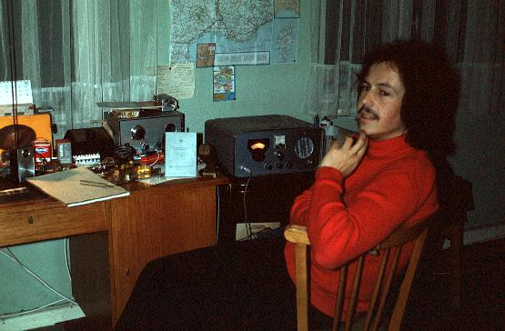DB1BZ am Abend der bestandenen Lizenzprüfung 18.10.1973 Erstes qso mit Gustav, DL6AI, später noch DC5BH, DK4BV und DK7KP/p
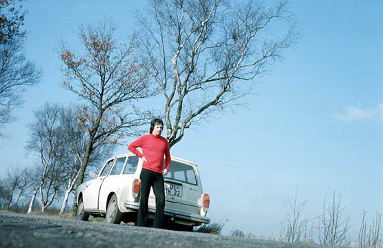DB1BZ – mobile im Frühjahr 1974 Trio 2200 und Endstufe 25 Watt mit λ/4 Antenne
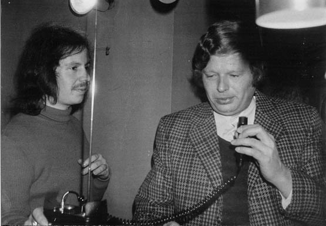Ein zünftiger Frühschoppen bei Rolf, DB6BC, mit Klaus, DK7BS, rechts und links DB1BZ mit seinem Trio 2200
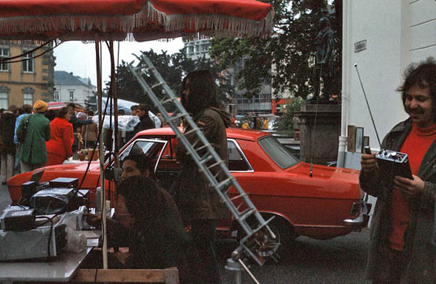DB1BZ – portabel auf dem Schloßplatz bei einer Amateurfunkausstellung mit DC9XD, DK7BT und DK4BV
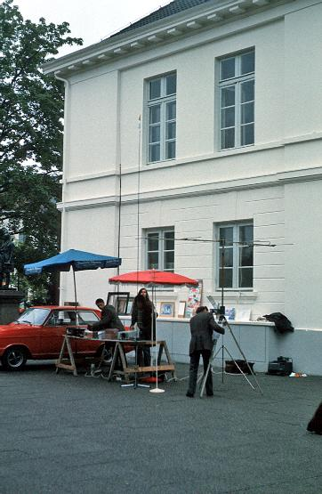
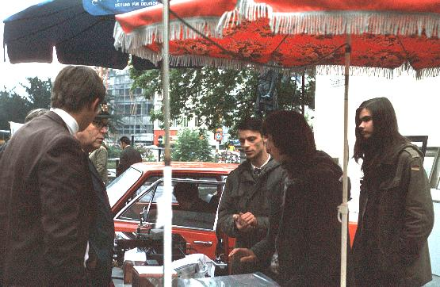
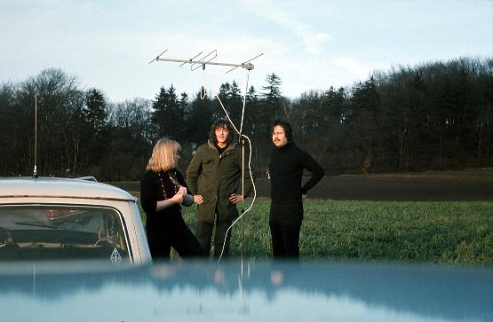Vom Weyerberg in Worpswede (51m ü. NN) nach DB0UO mit 4 ele Yagi, DB2XW, DB3BG und DB1BZ. Unser Relais hatte ja nun eine Horizontalantenne. (1978).
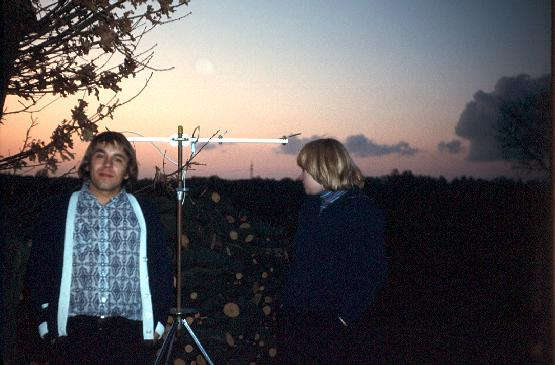Fuchsjagd Jugendgruppe 7. März 1976 Norbert DC2BY und Sabine DB2XW.
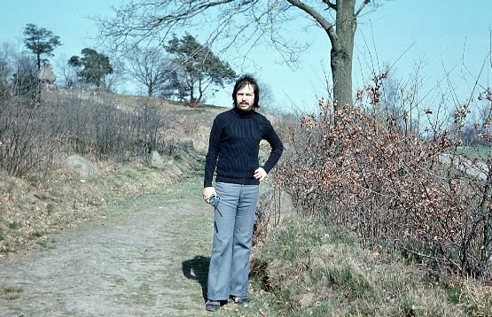DX vom Tillyhügel. Hier müßte man doch DB0ZO in der Handfunke hören?
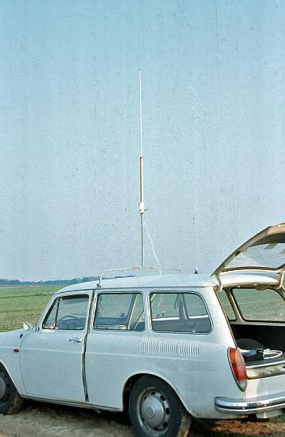Mobilfuchsjagd im Raume Süd Bremen. 120 Watt am Rundstrahler.
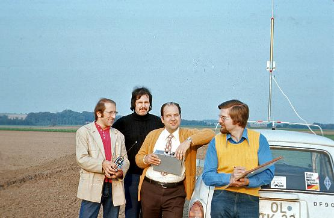Natürlich hat diese Spezialistencrew den Mobilwettbewerb gewonnen! Es sind Harald, DF1LY, Tom, DF9QM, Manfred, DJ6UA und Heiner, DB9BA.
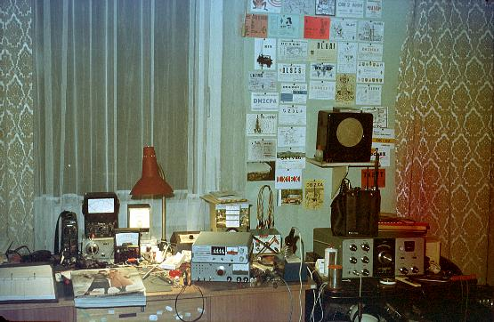Mein Shack Anfang 1977.
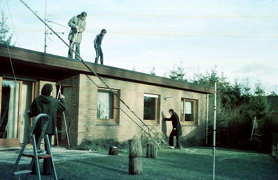Antennenaufbau bei DB9XQ nahe Edewecht.
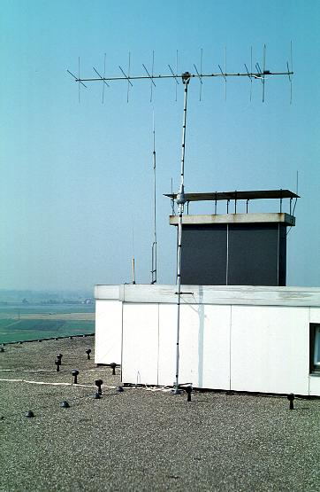Antennen in der Hundsmühlerstraße. Das war ein toller Standort.
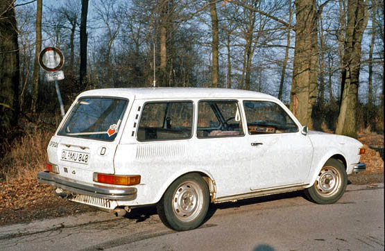Mein neues Auto 1980 mit λ /4 Antenne
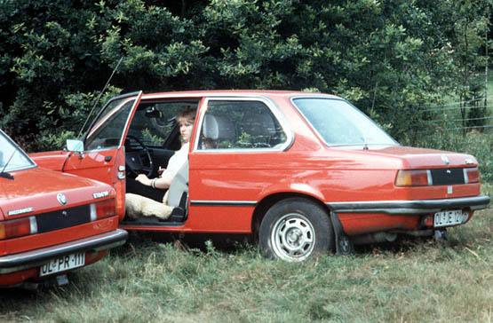Geburtstagsfuchsjagd von DF9QM 1982 am Tillyhügel. DL8BS als Fuchs.
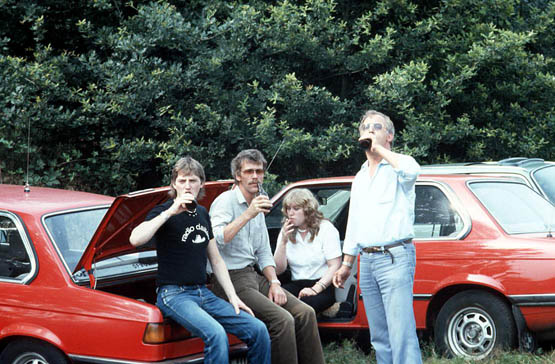
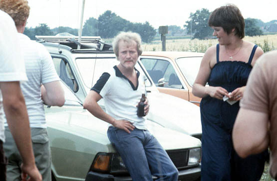
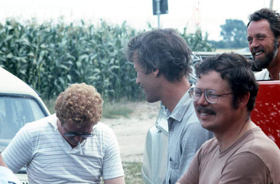
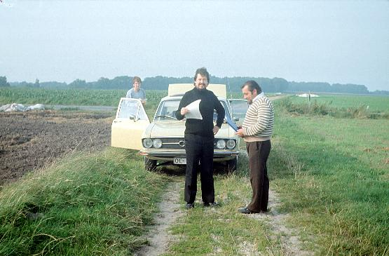Mobilfuchsjagd 1985 Bremen. Peter, DL1BBM, Tom, DF9QM und Bernd, DL5BBP.
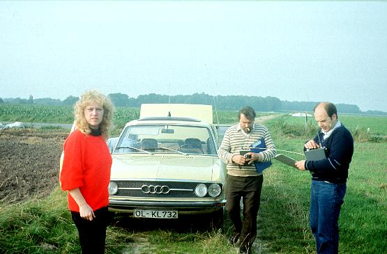1985 . Sabine, DL8BS, Bernd DL5BBP und Manfred, DJ6UA.
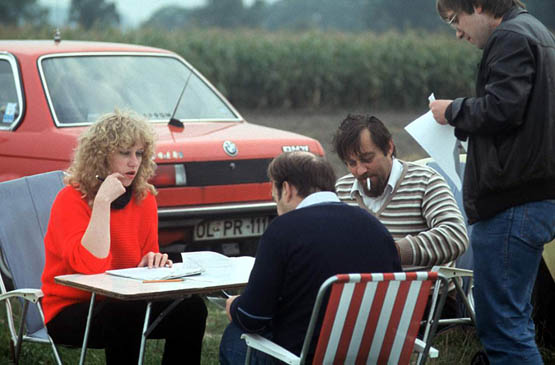Auswertung. DL8BS, DJ6UA, DL5BBP und DL1BBM.
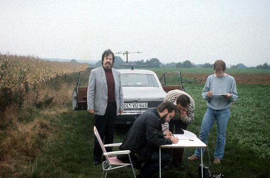Mobilfuchsjagd 1986 Bremen. DF9QM, schreibend ein SWL, DL5BBP und DL1BBM.
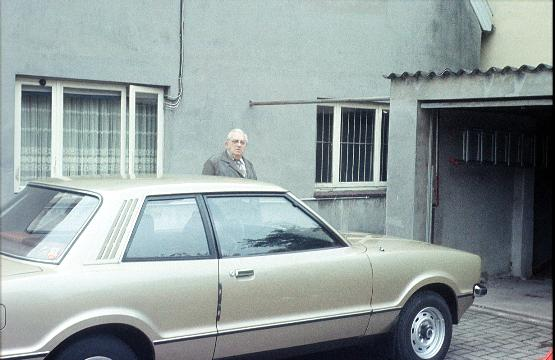Karl, DL2PI, darf nicht fehlen. Wer kannte ihn nicht?
Als jemand, der schon mit 8 Jahren begann, an alten Radios zu basteln, war mir der Amateurfunk in AM auf dem 40m Band bekannt. Aber leider machten immer mehr Stationen SSB. 1969 machte ich erste Versuche mit genehmigten Geräten auf dem 11m Band. Das Gerät war ein Tokai Fieldmaster. Aber das ging nur am Wochenende. Außerdem war die Reichweite gering und viele Taxis aus Rimini störten mit ihrem Betriebsfunk in Oldenburg.
1970 sah ich am Auto meines Physiklehrers das Rufzeichen DJ 1 RC. Aber es interessierte mich nicht so. 1971,(11. Klasse) schwärmte ein Mitschüler oft über das gute Musikprogramm des WDR2. Ich sah mir seine Anlage an, eine Telefunken Stereoanlage mit einer 4 ele Yagi in Oldenburg Süd. Den Sender wollte ich auch empfangen und dachte mir, ich muß mir nur ein besonders empfindliches Radio bauen.
Ich hatte einen ZF Streifen für 10,7 MHz für ein 50kHz Raster aus einem alten Taxifunkgerät. Es fehlte eigentlich nur eine gute Eingangsstufe. Da ich, woher weiß ich nicht mehr, ein Buch von Jupp Reithofer über 2m Empfänger besaß, baute ich einen Tuner, bei dem die HF Vorstufe, Mischstufe und Oszillator getrennt waren, mit 3 AF 106. Das Ganze bekam einen keramischen Dreifachdrehko für 24 DM! und mein Freund Helmut, der bei der AEG Werkzeugmacher war, fräste mir ein tolles versilbertes Dreikammergehäuse.
Der Tuner arbeitete außerordentlich gut. Zuerst war nur Rauschen zu vernehmen. Kein WDR, kein NDR. Ich mußte offensichtlich die Schwingkreise ändern. Doch plötzlich hörte ich eines Abends Stimmen. Es unterhielten sich DL6HY und DL2ZX/mobil. Toll, man konnte im Gegensatz zu den vielen Kurzwellen QSO’s, die ich auf 40m belauscht hatte, beide Stationen ständig gleichmäßig und gut hören. Außerdem war es aus dem Raum Oldenburg und daher interessanter für mich. Von Zeit zu Zeit hörte man Morsezeichen. Was war das? Ich malte sie mit: DB0UO. Hatte ja ein Radiomann Handbuch, in dem die Morsezeichen waren. Das dauerte…..
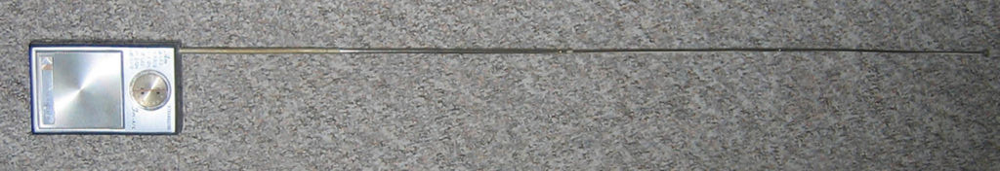Mit der Zeit bekam ich mit: Es handelte sich um ein Oldenburg Relais, das bei DJ6UA im Garten stand. Nach und nach bekam ich die wichtigsten Stationen und Rufzeichen mit. Manfred, DJ6UA, Hans, DL6HY, Gustav, DL6AI, Bruno, DL9TN, Hans, DK2FN, der oft sehr weit entfernt mobil war und natürlich DL2PI, der oft auf 80m war und dann in meinem Mittelwellenaudion zu hören war.
Los zu meinem Physiklehrer DJ1RC. Charly erklärte mir alles. Und auch, wie man Funkamateur wird und ich meldete mich beim DARC im März 1973 an.
Dann hatte ich mir noch ein kleines MW/UKW Taschenradio auf 2m umgebaut und konnte damit das Relais, das im März 1973 schon auf dem Wasserturm in Oldenburg aufgebaut war, bis etwa 25km weit hören. Wenn auf DB0UO kein Betrieb war, konnte ich den AM Bereich zum Radiohören benutzen.
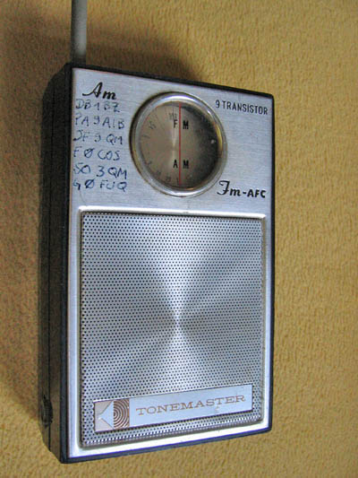Dieses Radio nahm ich im Sommer 73 immer mit. In Hessen, auf einem Berg bei Hünfeld, konnte ich 4 Relais hören und trennen, DB0DX, Feldberg, 150km, DB0YB, Bad Hersfeld, 20km, DB0XM, der hohe Meißner, 100km, und DB0XE in Kassel, 120km, für ein kleines Taschenradio, bei dem ich nur den Eingangs- und Oszillatorkreis verändert und neu abgeglichen hatte, eine beachtliche Reichweite.
Auf dem Radio stehen alle Rufzeichen, die ich im Laufe der Zeit hatte:
DB1BZ, PA9AIB, DF9QM, F0COS, SO3QM und G0FUQ.
Ganz schlimm war eigentlich, ohne Meßsender konnte ich meine Empfänger nur abgleichen, wenn das Relais länger aufgetastet wurde .Tatsächlich muße ich für Abgleicharbeiten oft auf den sonntäglichen Rundspruch von DC6KX warten.
Ab 18.10.73 war ich DB 1 BZ! Nach 5 Monaten konnte ich nun am Amateurfunk teilnehmen.
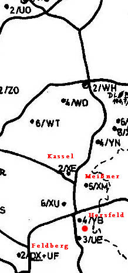